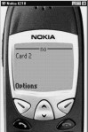

5
Inheritance and Templates
Wouldn't it be nice to
inherit something? Don't you sometimes wish that some rich old uncle died
somewhere and left you a few million dollars? Well, this is what inheritance is
all about. The only difference is that no body has to die - yet!
The yet after a pause is
significant. It is because the person who may die will be you - if you do not
understand this chapter well. So pay close attention to all that goes on,
because the changes are so slight that you may miss the significance until it
is too late.
Take for instance, the
situation in the French revolution. The revolution was at its peak, and the
revolutionists brought out these three fine lads of the King. The first, Raj,
was in charge of the computer systems imported into the country. When asked how
he would like to die, Raj chose to do so with his head down. He was ashamed of
all the second rate computers he had sold his countrymen, and so could not face
the crowd.
The crowd jeered and cried
for blood. "Execute him!" yelled the party chief. The executioner
released the cable, and down came the guillotine. But it stopped just two
inches from Raj's neck. Feeling it was divine intervention because he had
repented from the bottom of his heart, the crowd let him go.
The second, Har, was
incharge of group software and networking. He too chose to look down in shame.
After all, he had worked out such great deals for himself and even started
another company under the guise of sharing some of the revenue that he was
making with the public at large. But always managed to keep the lion's share
for himself. Repentant, he too did not want to face the crowd. Again, the
guillotine was raised, and then let go. And for the second time, it stopped a
scant 2 inches from it's victim's neck. Not wanting to anger the Lord, as it
was he who pardoned Har, the crowd let him go as well.
And the third, Dew, who
could really do nothing, however, was a different sort. Incharge of the software
companies, he couldn't care less about anyone else. So what if his wig fell off
as he looked to the sky. He would show the crowd that he was made of sterner
stuff. He'd face the guillotine as it cut off his head.
The crowd cheered and
yelled - "Off with his head!" The guillotine was raised, and just as
the party head was about the give the order. Dew cried out, "Wait!"
The executioner stopped. A hush fell over the crowd. Would he repent too, they
wondered. But no, Dew was not going to. In fact, as usual lost in his own
thoughts, and eager to prove himself smarter than all, he cried out in a loud
voice. "Stop, I can see what's jamming your machine!"
Don't be too eager. Take
your time to understand the basics, for it is the subtle differences that we
demonstrate here, that will make big differences later. You will get your
chance to be a genius later.
In this example, you will
wonder why this has been repeated. This routine has 3 cards.
a11.wml
<?xml version="1.0"?>
<!DOCTYPE wml PUBLIC "-//WAPFORUM//DTD WML 1.1//EN" "http://www.wapforum.org/DTD/wml_1.1.xml">
<wml>
<card title='yes' id="a1" >
<do type="accept" label="first">
<go href="#a2"/>
</do>
<p>
Card 1
</p>
</card>
<card title='no' id="a2" >
<p>
Card 2
</p>
</card>
<card title='bye' id="a3" >
<p>
Card 3
</p>
</card>
</wml>
|
Screen 5. 1 |
Screen 5. 2 |
Screen 5. 3 |
Each card is given an id.
The first card has a <do> and the type is given as accept. The label ‘first’
shows up on the next screen. When the program starts, the title yes will appear at the top of the screen.
Selecting first will execute <go href>. This takes you to card a2. If you have followed the program sequence,
you will have understood that at this point, there is no way to jump to a3.
Almost always a user would
like to go back to the previous screen. Unfortunately, in WAP appliances, there
is no Back button as seen in a web browser. To do so, we learnt about the
<prev> tag. But then this feature has to be built into the program. If
this has to be added to every card, it would be a big pain. Would it not be a
good idea to have every card copy or display a certain standard user
interface? For this, there is a tag
called template.
|
Screen 5. 4 |
a11.wml
<?xml version="1.0"?>
<!DOCTYPE wml PUBLIC "-//WAPFORUM//DTD WML 1.1//EN" "http://www.wapforum.org/DTD/wml_1.1.xml">
<wml>
<template>
<do type="accept" label="second" name="z2">
<go href="#a3"/>
</do>
</template>
<card title='yes' id="a1" >
<do type="accept" label="first" name="z1">
<go href="#a2"/>
</do>
<p>
Card 1
</p></card>
<card title='no' id="a2" >
<p>
Card 2
</p></card>
<card title='bye' id="a3" >
<p>
Card 3
</p>
</card>
</wml>
|
 |
|||
|
Screen 5. 5 |
Screen 5. 6 |
Screen 5. 7 |
Screen 5. 8 |
Don't hope to have everything
done for you though, or else your job as a WAP programmer will be pretty
boring. The template comes immediately after <wml>. It has to come before
the first <card>. Simply, template means copy. Anything that you place in
template will be used in all the cards you define later. In <template>, whatever code i.e.
<do /do> you write, is automatically available in <card>. You should realise by now, that when you
have a <do> in a template, it gets added on to the <do> in the
card. And all the other cards as well.
Hence in the first card there are two dos with two separate labels and the
second and the third cards will have one do each.
While copy is a nice simple
word that could be used, programmers never touch it. Hence, this is called
inheritance. It means that every card that follows, will inherit all that the
template has.
But inheritances rarely
come without problems. What happens if two people have the same name? Who
inherits what? The do, for instance, has also been given a name. If you don't
specify a name, the name is inherited as well. But if you do, then it has an
identity of its own. If you use the names similar to the ones in the template, then the definition in the card overwrites the definition in the
template.
In the next scriptlet, we
have <do /do> within a card. The
type is accept, then we give a name. Within the do tags we have given a new instruction ie noop.
a11.wml
<?xml version="1.0"?>
<!DOCTYPE wml PUBLIC "-//WAPFORUM//DTD WML 1.1//EN" "http://www.wapforum.org/DTD/wml_1.1.xml">
<wml>
<card title='yes' id="a1" >
<do type="accept" label="first" name="z1">
<noop/>
</do>
<p>
Card 1
</p>
</card>
</wml>
|
|
Noop does nothing. Those
who worked their way up the programming ladder, and worked with assembly
languages, will recognise this as being the term used to define No Operation.
In this case, the noop effectively disables the <do>. Within the service options, first is no more
visible.
In wml, you have 4 tasks -
go, prev, which take you somewhere either forward or backward in the
program; refresh is to display the same card over again; and noop which does
nothing at all. With a noop, you will see no options displayed. You may ask why you need a noop? The reason
is simple. You want to retain all the other features of the template and
disable the do. You therefore can have the <prev>, <go> and other
items defined, and disable the <do>s you don't want to use.
|
Screen 5. 11 |
a11.wml
<?xml version="1.0"?>
<!DOCTYPE wml PUBLIC "-//WAPFORUM//DTD WML 1.1//EN" "http://www.wapforum.org/DTD/wml_1.1.xml">
<wml>
<template>
<do type="accept" label="second" name="z1">
<go href="#a3"/>
</do>
</template>
<card title='yes' id="a1" >
<do type="accept" label="first" name="z1">
<noop/>
</do>
<p>
Card 1
</p>
</card>
</wml>
Manuals hardly keep up with
all the changes that programmers make to the program. This is why you keep
having books come out with "Secrets to…(fill in whatever subject you
like)". This example is something that we found out by experimenting. It
is not there in the manual. This may get a bit confusing. So slow down a bit
and stay with us. What we have is an example using an onenterforward.
a11.wml
<?xml version="1.0"?>
<!DOCTYPE wml PUBLIC "-//WAPFORUM//DTD WML 1.1//EN" "http://www.wapforum.org/DTD/wml_1.1.xml">
<wml>
<card id="card1" title="Title" onenterforward="#a2">
<onevent type="onenterforward">
<go href="#a3"/>
</onevent>
<p>
Hello World!!!
</p>
</card>
</wml>
|
|
The onenterforward will
move to #a2. The onevent also has an onenterforward which says goto a3. The documentation tells you that in the card
if you put the onenterforward, it is a shorter form of saying <onevent>
</onevent>. But then, which came first - the chicken or the egg? Is the
onenterforward called before the onevent? Or is this the other way around? The
documentation is silent about this. If in a card you have onevent; and the
onevent has an event, the onevent's event takes precedence. In the example, you
will see a3 gets called and not a2.
Let's add a little more
spice to our already complicated plot. Often, books (as manuals do) cast off
all these 'vague' questions. After all, you are not supposed to do anything extra.
Well, programmers skimped on a couple of bytes a few decades ago, and you know
how much was spent fixing the problem.
In a template, you can also have an onevent. The card can also
have an onevent. Both the do and the onevent, as we have told you before, are
same. The rule is that if you have the same onevent in the card and in the
template, the one in the card will take effect first. Between the card and the
template, the card gets the priority.
a11.wml
<?xml version="1.0"?>
<!DOCTYPE wml PUBLIC "-//WAPFORUM//DTD WML 1.1//EN" "http://www.wapforum.org/DTD/wml_1.1.xml">
<wml>
<template>
<onevent type="onenterforward">
<go href="#a4"/>
</onevent>
</template>
<card id="card1" title="Title" onenterforward="#a2">
<p>
Hello World!!!
</p>
</card>
</wml>
|
|
Our last example goes a
step further and we have added a template with onevent. That means in the card you can say event,
and in the template also you have an onevent. The card's event gets called
first.
The same card rules apply
here. To sum up - a card gets precedence over the template when the same events
are used in the wml file. The rule also
applies for oneventbackward event or any other event that you may use.